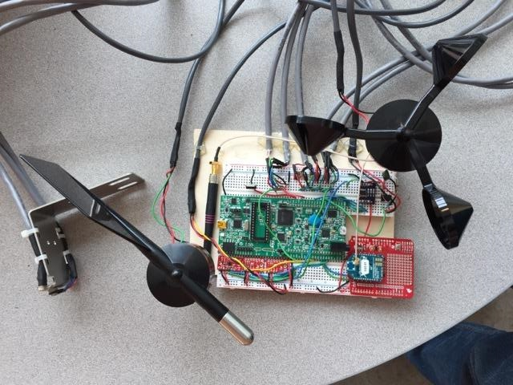
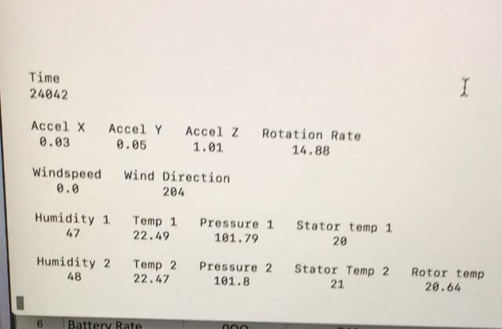

Wind Turbine Monitor
A microcontroller-based data collection device.
This project was a collaboration between the Portland State Electrical & Computer Engineering department
and a sponsor company that manufactures small-scale wind turbines. I graduated with a mechanical engineering degree and joined this project to learn more about microcontrollers and the C language.
The sponsor company discovered a market for affordable wind turbine monitoring devices and asked our team to design, build, and test a prototype of such a system. I led a team of three, was the sole developer of the firmware, and made most of the architectural descisions.
Component Selection
The sponsor company requested that the following data be collected at the following sample rates:
- Accelerations - 3 Axis: 120Hz
- Turbine Rotation Rate: 50Hz
- Wind Speed: 1Hz
- Wind Direction: 1Hz
- Ambient Temperature: 1Hz
- Ambient Pressure: 1Hz
- Ambient Humidity: 1Hz
- Stator Temperature: 1Hz
- Rotor Temperature: 1Hz
Sensors, Flash memory, an MCU and a radio that met criteria for operating temperature range for power usage were selected. The system contains components that communicate via I2C, SPI, Serial, and analog signals:

Hardware Architectural Specification

Complete breadboard system used for firmware development
Firmware Overview
The firmware was developed in C and executed on an STM32L4 discovery board. A simplified overview of the main loop is shown below:

An interrupt driven by the real time clock fires at a regular interval. This wakes
the device up and runs the main loop. The mode is determined based on the state of the rotor speed variable.
Counters in the main loop increment upon each wakeup and trigger routines to collect data from sensors at the
various sample rates. The raw data is stored in FIFO buffers.
The main loop counters also drive the data in the FIFO buffers to be read out, processed, packetized,
and saved to a FIFO buffer in the flash. The data remains in flash until it is successfully sent to the host.
The device goes into sleep mode to save power and wakes up at the next RTC interrupt. Some combination of all
of these processes occur 120 times a second in powered mode.
Acceleration Sensing
An LIS3DH MEMS accelerometer by STMicroelectronics was chosen for this device - it provides adequate resolution and consumes little
power. A software low-pass filter was added to reduce noise.
Rotation Rate and Rotor Temperature Sensing
A Hall effect sensor measures rotation rate by sensing rotor magnet passes. Two IR temperature sensors measure
the temperature of the rotor magnets. The plot below shows sensed rotor speed and rotor temperature for a trial ramping from 25 - 100 RPM.

Hall effect sensors and two IR temperature sensor on bracket

Bracket temporarily attached to turbine for testing

25-100 RPM sweep data
Environmental Conditions Sensing
Two I2C devices sense environmental temperature, pressure, and humidity. An anemometer and wind vane sense wind speed and direction.
The annemometer outputs a sinusoid of varying amplitude and frequency. To trigger an interrupt with a digital signal, the anemometer signal passes through a comparator.
Wireless Communication
Communication between the device and the host occurs via a wireless serial link between two Xbee radios.
All of the data to be sent between the device and host is formatted into one of eight standardized packet types.
Each packet type contains data from different sensors. A python script was written to interpret and
display the data contained in these packets at the ground station.

Ground station python script output
Two measures are in place to verify data integrity. If either check fails, the ground station requests a re-send.
-
A counter variable is embedded in each packet as it is saved to flash.
-
A CRC-8 is computed and stored as the 14th byte in each packet.
Results
A breadboarded prototype was used to collect data from a test-turbine at the sponsor's facility. The system was shown to meet all of the design requirements set out by our client. All design files and firmware were transfered to the sponsor company for use in further prototyping and eventual production of a commercial device.

Testing the system at the sponsor's facility

CAD rendering of proposed packaging